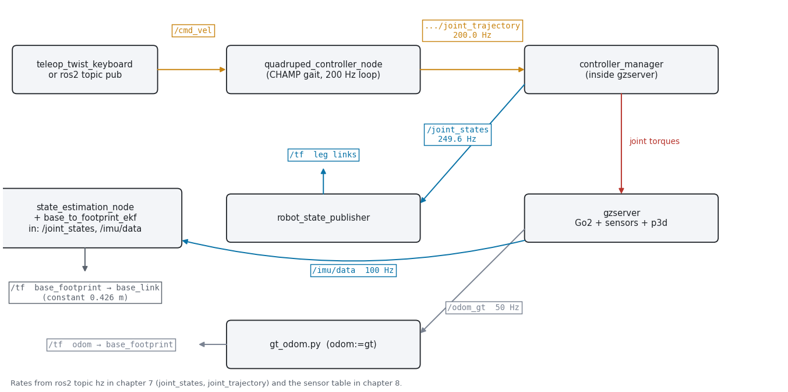
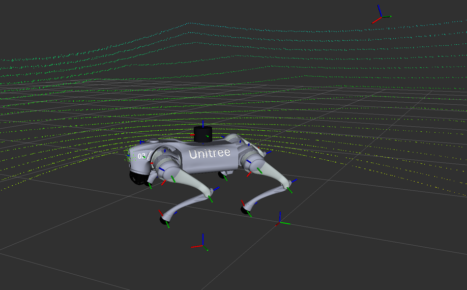
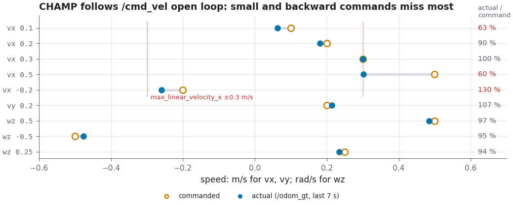
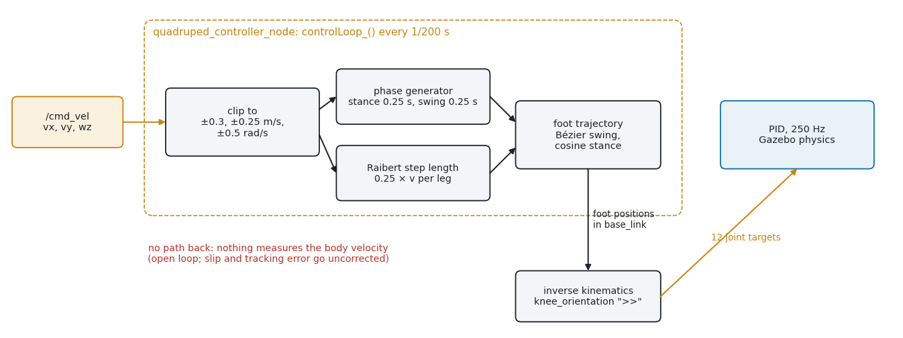
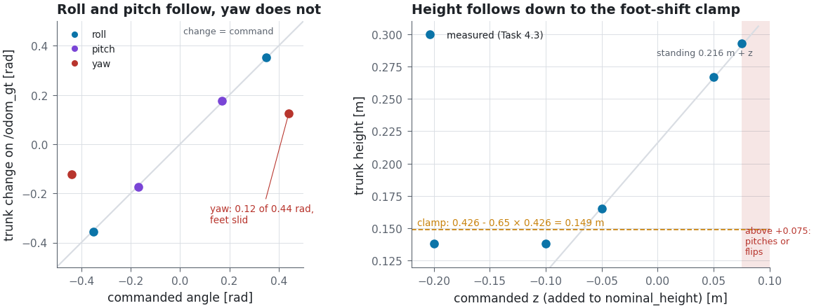
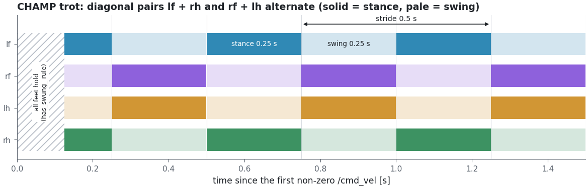
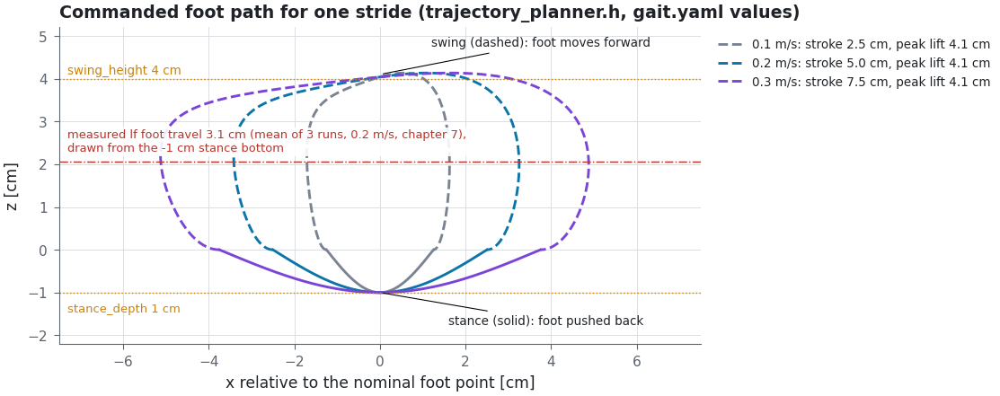
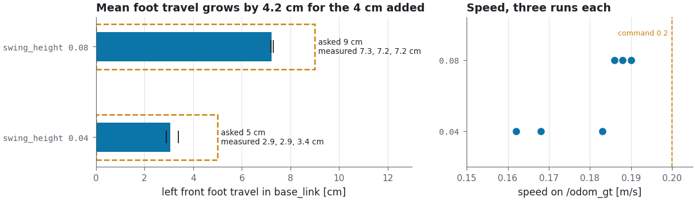

The robot · Chapter 7
Make it walk
| Goal | Start the simulator and the gait controller, drive the robot by hand, tilt and lower its trunk, and change one gait parameter and measure the result. |
| Time | 2 h |
| Before you start | Chapter 6, including the RViz config in its Task 2.1. |
| You will learn | how to check ros2_control controllers without ros2controlcli; the speeds CHAMP really reaches; how to command CHAMP's body pose and its limits; why gait parameters need a restart. |
This chapter starts only the simulator and the gait controller: no estimation and no Nav2. Outputs in Tasks 1 and 3 are from
one session on the test machine (32 threads) at a real-time factor of 1.00. Tasks 2, 4 and 5 were run later on the same
machine with other simulators running, at a real-time factor of 0.81 to 0.86; Tasks 4.3 and 5 were repeated at 0.48 to 0.79
and gave the same numbers within the spread stated there. The Task 2.1 output, the second Task 3.1 run, the parameter test in
Task 5.1 and the Exercise come from a later session at 0.67 to 0.93. Every command runs from the repository root after
source env.sh, one terminal per long-running command.
Task 1: Start the simulator and check the controllers
1.1 Launch the simulator with ground-truth odometry
Objective: a standing robot and a clock.
ros2 launch go2_nav_sim sim.launch.py odom:=gt
odom:=gt starts gt_odom.py, which publishes odom to base_footprint from simulator ground truth. Without it nothing
publishes that transform until estimation.launch.py runs. The robot is spawned at marker A, (-4.5, -3.5) in the world, facing
+x. On the test machine /imu/data was publishing within 10 s of the launch.
Check: the launch output contains Configured and activated joint_group_effort_controller and
Configured and activated joint_states_controller (chapter 6, Task 6.2).
1.2 Check the controllers and the rates
Objective: confirm that commands reach the joints and state comes back.
timeout 5 gz stats -d 1 | head -n 1
# Factor[1.01] SimTime[6.40] RealTime[6.73] Paused[F]
ros2 service call /controller_manager/list_controllers controller_manager_msgs/srv/ListControllers
# ... name='joint_group_effort_controller', state='active', type='joint_trajectory_controller/JointTrajectoryController' ...
# ... name='joint_states_controller', state='active', type='joint_state_broadcaster/JointStateBroadcaster' ...
ros2 topic hz /joint_states # average rate: 249.642
ros2 topic hz /joint_group_effort_controller/joint_trajectory # average rate: 200.001
ros2 topic info /cmd_vel -v | grep "Node name" # Node name: quadruped_controller_node
ros2 control list_controllers would be shorter, but it needs ros2controlcli, which is not installed here. The controller
manager services work without it. /joint_states comes from the joint state broadcaster at the controller manager's 250 Hz. The
trajectory topic is CHAMP's output at its 200 Hz loop rate. The /cmd_vel subscriber is CHAMP's cmd_vel/smooth, remapped by
bringup.launch.py.

What runs after sim.launch.py odom:=gt, with the rates measured above. Orange is the command path, blue the joint and IMU data, grey the ground truth and the transforms built from it.
Check: both controllers active, /joint_states near 250 Hz and the trajectory near 200 Hz.
Task 2: Watch the robot in RViz
2.1 Open go2.rviz in the odom frame
Objective: see the simulated robot and its lidar with the shared config.
rviz2 -d src/go2_nav_sim/rviz/go2.rviz -f odom --ros-args -p use_sim_time:=true
ros2 run tf2_ros tf2_echo odom base_link
At time 8.821000000
- Translation: [0.057, 0.012, 0.426]
- Rotation: in Quaternion (xyzw) [0.000, 0.000, -0.006, 1.000]
- Rotation: in RPY (radian) [0.000, 0.000, -0.012]
That is a robot standing where it landed after the spawn: x and y are the few centimetres it slid, and z is the constant
0.426 m explained below. There is no map yet, so the Map, costmap, Plan and Footprint displays
warn and stay empty. LaserScan stays empty too: /scan comes from estimation.launch.py.

go2.rviz with -f odom while a 0.35 rad body roll was commanded (Task 4). The model stands above the grid, which is the
odom plane at base_footprint height, and the trunk is drawn level.
base_footprint to base_link is a constant 0.426 m with no rotation here (CHAMP gets no foot contacts, so it assumes straight
legs; chapter 1). The real trunk stands about 0.216 m above the floor (Task 4), so RViz
draws the robot about 0.21 m too high. gt_odom.py publishes odom to base_footprint with yaw only, so TF does not carry the
trunk's roll, pitch or height. Use /odom_gt for those.
Check: the RobotModel is drawn and LidarPoints shows the walls.
Task 3: Drive it and measure the velocity limits
3.1 Drive forward from the command line
Objective: walk a known command and measure the result on /odom_gt.
ros2 topic echo --once /odom_gt --field pose.pose.position
# x: 0.05008175569465223
# y: -0.004876937436957718
# z: 0.21572455418117945
timeout 10 ros2 topic pub -r 10 /cmd_vel geometry_msgs/msg/Twist "{linear: {x: 0.2}}" > /dev/null
ros2 topic pub --once /cmd_vel geometry_msgs/msg/Twist "{}"
ros2 topic echo --once /odom_gt --field pose.pose.position
# x: 1.8891303920561189
# y: 0.022557138095836482
# z: 0.21584610900440745
/odom_gt is relative to the spawn point, so the robot walked 1.84 m forward and drifted 2.7 cm sideways. The x of 0.05 before
the command is the slide on landing after the spawn. The zero twist goes out only once the second ros2 process has started, so
the robot walked slightly longer than 10 s.
Twelve seconds of the recorded A-to-B run (media/go2_a2b_dashboard.mp4 from 0:11; Nav2 drives it, not teleop). The robot stands while the plan appears, then starts stepping: the IMU traces in the bottom row go from flat to a periodic pattern, and the speed tile climbs to about 0.25 m/s.
Check: timeout 10 counts wall-clock seconds, so the distance depends on the real-time factor. Read it first with
timeout 5 gz stats -d 1 | head -n 1; x should grow by about 0.18 m/s × 10 s × factor, and z stays near 0.216 m. At a factor
of 1.00 x grew by 1.84 m (above); at 0.67 to 0.89 the same commands moved it from 0.062 to 1.525 m, 1.46 m.
Common mistakes:
- CHAMP keeps the last
/cmd_velforever; there is no timeout. After a single 0.2 m/s message and then silence, the robot was still walking at 0.183 m/s 3 to 8 s later. Always end with a zero twist. - A zero command freezes the gait clock and the robot stands. Any non-zero command, however small, makes it step.
3.2 Drive with the keyboard
Objective: drive interactively within CHAMP's limits.
ros2 run teleop_twist_keyboard teleop_twist_keyboard
i walks forward, k publishes a zero twist, and the start-up text lists the other keys. It starts at speed 0.50 turn 1.00,
above CHAMP's limits, so the commands are clipped to 0.3 m/s and 0.5 rad/s. Each z lowers both by 10 %, and five presses bring
the speed to 0.295 m/s.
Check: the robot in RViz walks on i and stops on k.
3.3 Compare commanded and actual speed
Objective: know how far the body speed is from the command.
Each command below was published at 20 Hz for 10 s of simulated time. The speed is the /odom_gt displacement over the
last 7 s, expressed in the robot's heading at the start of the window, so the 3 s start-up transient is excluded.
| Command | Actual | Side effect |
|---|---|---|
| vx 0.1 m/s | 0.063 m/s | yaw drift -2.3° in 7 s |
| vx 0.2 m/s | 0.181 m/s | lateral 0.005 m/s |
| vx 0.3 m/s | 0.300 m/s | lateral -0.014 m/s |
| vx 0.5 m/s | 0.302 m/s | clipped by max_linear_velocity_x |
| vx -0.2 m/s | -0.260 m/s | |
| vy 0.2 m/s | 0.214 m/s | forward creep -0.043 m/s |
| wz 0.5 rad/s | 0.484 rad/s | lateral -0.024 m/s |
| wz -0.5 rad/s | -0.477 rad/s | lateral 0.022 m/s |
| wz 0.25 rad/s | 0.234 rad/s |

The table above as a plot. Ratios more than 10 % from 1 are red: vx 0.1 (63 %), vx 0.5 (60 %, clipped) and vx -0.2 (130 %).
The gait is kinematic and nothing measures the body speed, so foot slip and joint tracking error go uncorrected. Small commands
lose the most (0.1 m/s reaches 63 % of the command, a 37 % loss), walking backwards overshoots by 30 %, and sideways walking
creeps backwards. Anything that integrates /cmd_vel as if it were odometry inherits these errors. CHAMP's own leg odometry is
no better here: on a 3.2 m walk it reported 0.55 m (chapter 9).

One 5 ms tick of controlLoop_() in quadruped_controller.cpp. Limits and durations are the gait.yaml values in Task 5. The only feedback is the joint PID; no block reads the body velocity.
Check: vx 0.5 gives the same speed as vx 0.3 (the clip).
Task 4: Command the body posture
4.1 Find the posture topic and its type
Objective: find where CHAMP takes a body pose, from the running graph.
ros2 topic info /body_pose -v | grep -E "Type|Node name|count"
ros2 interface show geometry_msgs/msg/Pose | grep -v "^\s*#"
Type: geometry_msgs/msg/Pose
Publisher count: 0
Subscription count: 1
Node name: quadruped_controller_node
Point position
float64 x
float64 y
float64 z
Quaternion orientation
float64 x 0
float64 y 0
float64 z 0
float64 w 1
cmdPoseCallback_ in champ/champ_base/src/quadruped_controller.cpp converts the quaternion to roll, pitch and yaw and adds
position.z to nominal_height (0.225 m). BodyController::poseCommand in body_controller.h then moves every foot target
the opposite way. The pose stays until the next message. Upstream's champ_teleop.py maps a gamepad to roll ±0.35, pitch
±0.17 and yaw ±0.44 rad, and only lowers the body (z from 0 down to -0.5 m), never raises it. This stack does not run
champ_teleop; you publish the message yourself.
Check: one subscriber, quadruped_controller_node.
4.2 Publish a pose and measure the trunk
Objective: command a height or attitude and read what the trunk did on /odom_gt.
Save this as posture.py. It holds the neutral pose for 2 s, the commanded pose for 3 s, prints the mean of the last second of
each, and returns to neutral.
"""Command a CHAMP body pose and measure how the trunk moves on /odom_gt.
usage: python3 posture.py z roll pitch yaw (z in m added to nominal_height; angles in rad)"""
import math, sys, rclpy
from geometry_msgs.msg import Pose
from nav_msgs.msg import Odometry
def pose_msg(z, roll, pitch, yaw):
cr, sr = math.cos(roll / 2), math.sin(roll / 2)
cp, sp = math.cos(pitch / 2), math.sin(pitch / 2)
cy, sy = math.cos(yaw / 2), math.sin(yaw / 2)
m = Pose()
m.position.z = float(z)
m.orientation.x = sr * cp * cy - cr * sp * sy
m.orientation.y = cr * sp * cy + sr * cp * sy
m.orientation.z = cr * cp * sy - sr * sp * cy
m.orientation.w = cr * cp * cy + sr * sp * sy
return m
def height_rpy(p):
o = p.orientation
return (p.position.z,
math.atan2(2 * (o.w * o.x + o.y * o.z), 1 - 2 * (o.x * o.x + o.y * o.y)),
math.asin(2 * (o.w * o.y - o.z * o.x)),
math.atan2(2 * (o.w * o.z + o.x * o.y), 1 - 2 * (o.y * o.y + o.z * o.z)))
rclpy.init()
node = rclpy.create_node('posture')
pub = node.create_publisher(Pose, 'body_pose', 1)
samples = []
node.create_subscription(Odometry, 'odom_gt', lambda m: samples.append(m.pose.pose), 10)
def hold(msg, seconds): # publish at the /odom_gt rate (50 Hz); return the mean of the last second
samples.clear()
while len(samples) < 50 * seconds:
pub.publish(msg)
rclpy.spin_once(node)
return [sum(v) / 50 for v in zip(*(height_rpy(p) for p in samples[-50:]))]
before = hold(pose_msg(0, 0, 0, 0), 2)
after = hold(pose_msg(*map(float, sys.argv[1:5])), 3)
hold(pose_msg(0, 0, 0, 0), 2) # back to the neutral pose
print('command z %+.3f m roll %+.2f pitch %+.2f yaw %+.2f rad' % tuple(map(float, sys.argv[1:5])))
print('trunk height %.3f -> %.3f m change: roll %+.3f pitch %+.3f yaw %+.3f rad'
% (before[0], after[0], after[1] - before[1], after[2] - before[2], after[3] - before[3]))
python3 posture.py 0 0.35 0 0
command z +0.000 m roll +0.35 pitch +0.00 yaw +0.00 rad
trunk height 0.216 -> 0.216 m change: roll +0.351 pitch +0.002 yaw +0.006 rad
Check: the roll change is within 0.01 rad of the command.
4.3 Sweep the champ_teleop ranges and the height
Objective: find which commands the trunk follows and which it does not.
One posture.py run per row, in this order, robot standing:
| Command | Trunk height | Roll change | Pitch change | Yaw change |
|---|---|---|---|---|
| roll +0.35 rad | 0.216 → 0.216 m | +0.351 | +0.002 | +0.006 |
| roll -0.35 rad | 0.216 → 0.216 m | -0.356 | +0.001 | -0.012 |
| pitch +0.17 rad | 0.216 → 0.216 m | +0.000 | +0.177 | -0.006 |
| pitch -0.17 rad | 0.216 → 0.216 m | +0.000 | -0.175 | -0.017 |
| yaw +0.44 rad | 0.216 → 0.220 m | -0.013 | +0.011 | +0.124 |
| yaw -0.44 rad | 0.216 → 0.220 m | +0.013 | +0.014 | -0.122 |
| z -0.05 m | 0.215 → 0.165 m | +0.001 | -0.003 | -0.012 |
| z +0.05 m | 0.216 → 0.267 m | -0.001 | +0.003 | -0.067 |
| z -0.10 m | 0.216 → 0.138 m | +0.004 | -0.001 | -0.019 |
| z -0.20 m | 0.216 → 0.138 m | +0.001 | -0.001 | +0.000 |
| z +0.075 m | 0.216 → 0.293 m | -0.001 | +0.004 | -0.126 |
Roll and pitch follow the command within 0.012 rad, and height within 2 mm for ±0.05 m. Yaw does not: the trunk turned 0.12 of the 0.44 rad, and the robot's heading did not come back afterwards, so the feet slid. In an earlier sweep the same two yaw commands gave +0.061 and -0.435 rad. Treat yaw as unreliable here.
Below about -0.08 m the height stops changing. body_controller.h clamps the foot shift to 0.65 × 0.426 = 0.277 m, so the
lowest commanded height is 0.426 - 0.277 = 0.149 m; the trunk sat at 0.138 m, 1.1 cm lower, which is the same sag as standing
(0.216 m against the 0.225 m nominal_height).

The Task 4.3 table as two plots. The shaded band above z +0.075 m is where the trunk pitched or flipped (the common mistakes below).
Check: your roll and pitch rows match the command to about 0.01 rad, and z -0.10 and -0.20 give the same height.
Common mistakes:
- Raising the body too far. z +0.10 m from neutral reached 0.336 m but pitched the trunk by -0.655 rad. Going straight from
z -0.10 to +0.10 m flipped the robot onto its back (roll -3.141 rad, height 0.045 m on
/odom_gt); only a restart of the launch recovers it. Stay at or below +0.075 m. - Forgetting the pose is held. CHAMP keeps the last
/body_pose(Task 4.1); publish"{}"(all zeros, w = 1) to return to neutral. - Looking for the tilt in TF or RViz. TF shows a level trunk (Task 2.1). The Gazebo IMU orientation on
/imu/dataequals ground truth, so its roll and pitch would show it, perfectly in simulation and not on hardware.
4.4 Measure how the trunk moves while walking
Objective: see the trunk motion that no body pose command removes.
With the robot walking at 0.2 m/s, this samples /odom_gt for 6 s:
ros2 topic pub -r 10 /cmd_vel geometry_msgs/msg/Twist "{linear: {x: 0.2}}" > /dev/null &
sleep 3
python3 - <<'PY'
import math, rclpy
from nav_msgs.msg import Odometry
rclpy.init(); n = rclpy.create_node('trunk_probe'); s = []
n.create_subscription(Odometry, 'odom_gt', lambda m: s.append(m.pose.pose), 100)
while len(s) < 300: # 6 s at 50 Hz
rclpy.spin_once(n)
q = [p.orientation for p in s]
z = [p.position.z for p in s]
roll = [math.degrees(math.atan2(2*(o.w*o.x + o.y*o.z), 1 - 2*(o.x*o.x + o.y*o.y))) for o in q]
pitch = [math.degrees(math.asin(2*(o.w*o.y - o.z*o.x))) for o in q]
print(f"height {min(z):.3f} to {max(z):.3f} m roll {min(roll):.1f} to {max(roll):.1f} deg pitch {min(pitch):.1f} to {max(pitch):.1f} deg")
PY
kill %1; ros2 topic pub --once /cmd_vel geometry_msgs/msg/Twist "{}"
height 0.206 to 0.219 m roll -2.1 to 3.6 deg pitch -2.0 to 1.9 deg
Standing, the trunk is at 0.216 m with roll and pitch within about 0.5 degrees of level. Walking, the height oscillates at
4.0 Hz at every speed tested, twice per 0.5 s stride. The trunk sits about 1.6 cm lower over its feet than nominal_height
(foot at -0.209 m in base_link while standing, against 0.225 m commanded); the likely cause is the PID tracking error under the
robot's weight. The trot timing and the commanded foot path behind the 4.0 Hz bounce are drawn in
chapter 1, Task 2.
Check: the walking roll and pitch ranges are a few degrees, larger than the 0.5 degrees standing.
Task 5: Edit the gait YAML, restart and measure
5.1 Read the gait parameters
Objective: know what each key in gait.yaml does before changing one.
robots/configs/go2_config/config/gait/gait.yaml, with what each key does in the CHAMP source:
| Key | Value | Effect |
|---|---|---|
max_linear_velocity_x |
0.3 | forward/backward command clipped to ±0.3 m/s (leg_controller.h) |
max_linear_velocity_y |
0.25 | sideways clip, m/s |
max_angular_velocity_z |
0.5 | yaw clip, rad/s |
stance_duration |
0.25 | stance time per step, s; also sets the stroke: raibertHeuristic in leg_controller.h returns 0.25 / 2 × velocity and transformLeg doubles it, so the stroke is 0.25 × velocity. Swing time is fixed at 0.25 s in phase_generator.h |
swing_height |
0.04 | foot lift in swing, m |
stance_depth |
0.01 | how far the stance foot is pressed below nominal, m |
nominal_height |
0.225 | target height of base_link above the feet, m |
com_x_translation |
0.0 | shifts all feet along x relative to the trunk, m |
knee_orientation |
">>" |
knee direction, front then hind; selects the IK solution |
pantograph_leg |
false | for pantograph leg mechanisms |
odom_scaler |
0.9 | scale on CHAMP's leg odometry; the controller does not read it |

Stance and swing per leg, computed by re-running the logic of phase_generator.h with stance_duration 0.25 s and its fixed 0.25 s swing. For the first 0.125 s after a command the has_swung_ rule holds every foot; the trot then starts half-way through a stance.

The commanded foot path relative to its nominal point, from the control points in trajectory_planner.h scaled by swing_height and the stroke of 0.25 × velocity. The swing loop reaches past the stroke at both ends. The mean measured foot travel at swing_height 0.04 (3.1 cm, Task 5.4) is less than the commanded 4.1 + 1 cm.
The same gait on the MuJoCo Go2 at half speed, 0.2 m/s, with the timing strip above and a cursor. Foot paths from the two headers, joint angles from the closed-form IK in modules/m04_kinematics, trunk moved at the commanded speed at a fixed height. Kinematics only: no physics and no CHAMP code runs, so there is no slip and no trunk bounce. Made by docs/img/c06-videos.py.
The keys are read once, when the node starts. ros2 param set /quadruped_controller_node gait.swing_height 0.10 reports
Set parameter successful, and ros2 param get then prints Double value is: 0.1, but the gait did not change. In one
session foot_lift.py (Task 5.2) measured 3.0 cm of travel just before the param set and 3.5 cm after it (3.6 cm in a
second session), close to the 2.9 to 3.4 cm of the 0.04 m runs in Task 5.4 and far from the 7.2 cm that 0.08 gave from the
YAML.
Check: grep swing_height src/third_party/unitree-go2-ros2/robots/configs/go2_config/config/gait/gait.yaml shows 0.04.
5.2 Measure the foot lift before the change
Objective: a baseline from the same script you will use after the change.
Save this as foot_lift.py. It walks at 0.2 m/s for 8 s, then stops, and reports the left front foot's vertical travel in
base_link (from TF, so from the measured joint angles) and the body speed over the last 5 s:
"""Walk forward at 0.2 m/s and measure the left front foot's vertical travel in base_link and the body speed."""
import math, rclpy
from rclpy.time import Time
from geometry_msgs.msg import Twist
from nav_msgs.msg import Odometry
from tf2_ros import Buffer, TransformListener
rclpy.init()
node = rclpy.create_node('foot_lift', parameter_overrides=[rclpy.parameter.Parameter('use_sim_time', value=True)])
tf = Buffer(); TransformListener(tf, node)
cmd = node.create_publisher(Twist, 'cmd_vel', 1)
odom = []
node.create_subscription(Odometry, 'odom_gt', lambda m: odom.append(m.pose.pose.position), 10)
walk = Twist(); walk.linear.x = 0.2
foot = []
while len(odom) < 400: # 8 s at 50 Hz; measure over the last 5 s
cmd.publish(walk)
rclpy.spin_once(node)
if len(odom) > 150:
try:
foot.append(tf.lookup_transform('base_link', 'lf_foot_link', Time()).transform.translation.z)
except Exception:
pass
cmd.publish(Twist()) # always stop
a, b = odom[150], odom[-1]
print(f"foot z in base_link {min(foot):.3f} to {max(foot):.3f} m (travel {100 * (max(foot) - min(foot)):.1f} cm), "
f"speed {math.hypot(b.x - a.x, b.y - a.y) / 5:.3f} m/s")
python3 foot_lift.py; ros2 topic pub --once /cmd_vel geometry_msgs/msg/Twist "{}"
foot z in base_link -0.214 to -0.185 m (travel 2.9 cm), speed 0.168 m/s
A second run gave 2.9 cm and 0.162 m/s, and a third, at a real-time factor of 0.48, 3.4 cm and 0.183 m/s. Expect a few millimetres and a few cm/s of spread between runs on a busy machine.
Check: a travel near 3 cm, well under the 5 cm that swing_height plus stance_depth ask for.
5.3 Copy the YAML, edit it and restart
Objective: change swing_height without editing upstream files.
Stop the simulator (Ctrl-C in its terminal, or scripts/stop.sh). Then copy the gait file and the launch file, and point the
copy of the launch file at the copy of the YAML:
mkdir -p docs/exercises
cp src/third_party/unitree-go2-ros2/robots/configs/go2_config/config/gait/gait.yaml docs/exercises/gait.yaml
sed -i 's/swing_height : 0.04/swing_height : 0.08/' docs/exercises/gait.yaml
cp src/go2_nav_sim/launch/sim.launch.py docs/exercises/sim_gait.launch.py
sed -i "s|os.path.join(cfg, 'config/gait/gait.yaml')|os.path.abspath('docs/exercises/gait.yaml')|" docs/exercises/sim_gait.launch.py
grep -n "swing_height" docs/exercises/gait.yaml
grep -n "gait_config_path" docs/exercises/sim_gait.launch.py
ros2 launch docs/exercises/sim_gait.launch.py odom:=gt
11: swing_height : 0.08
25: 'gait_config_path': os.path.abspath('docs/exercises/gait.yaml'),
ros2 launch accepts a file path, so the copy needs no build. os.path.abspath resolves against the folder you launch from;
run it from the repository root.
Check: ros2 param get /quadruped_controller_node gait.swing_height prints Double value is: 0.08.
5.4 Measure again
Objective: see whether the foot follows the new value.
python3 foot_lift.py; ros2 topic pub --once /cmd_vel geometry_msgs/msg/Twist "{}"
foot z in base_link -0.216 to -0.143 m (travel 7.3 cm), speed 0.186 m/s
swing_height |
Foot travel (three runs) | Asked for (swing_height + stance_depth) |
Speed at 0.2 m/s command |
|---|---|---|---|
| 0.04 m | 2.9, 2.9, 3.4 cm | 5 cm | 0.168, 0.162, 0.183 m/s |
| 0.08 m | 7.3, 7.2, 7.2 cm | 9 cm | 0.186, 0.190, 0.188 m/s |
Doubling swing_height raised the mean measured travel from 3.07 to 7.23 cm, by 4.2 cm for the 4 cm added. The robot also came closer to
the commanded 0.2 m/s, but the third 0.04 m run (0.183 m/s) is within 3 mm/s of the slowest 0.08 m run, so three runs per
setting on a loaded machine do not show that the speed changed.

All three runs per setting of the Task 5.4 table. The gap between asked and measured stays near 2 cm at both settings.
Check: the travel grows by about 4 cm. Keep docs/exercises/sim_gait.launch.py for the Exercise, then stop the launch and
use sim.launch.py again for the next chapters.
Exercise
Predict the foot travel that foot_lift.py measures with swing_height : 0.06, using only the Task 5.4 table. Then set 0.06
in docs/exercises/gait.yaml, start docs/exercises/sim_gait.launch.py odom:=gt as in Task 5.3, check the value with
ros2 param get, and measure it three times.
Answer: at both settings in the table the foot travelled about 2 cm less than swing_height + stance_depth (1.9 cm at 0.04,
1.8 cm at 0.08), so 0.06 + 0.01 m asks for 7 cm and the prediction is about 5.1 cm. Three runs at a real-time factor of 0.76 to
0.88 gave:
foot z in base_link -0.217 to -0.164 m (travel 5.3 cm), speed 0.187 m/s
foot z in base_link -0.215 to -0.164 m (travel 5.1 cm), speed 0.188 m/s
foot z in base_link -0.215 to -0.164 m (travel 5.1 cm), speed 0.189 m/s
The top of the swing moved up by 2.1 cm from the 0.04 m runs (-0.185 m) for the 2 cm added, and the bottom stayed near
-0.215 m, so the gap of about 2 cm sits in the stance part of the path and does not depend on swing_height.
Further reading
chvmp/champ: the controller source used in this chapter (quadruped_controller.cpp,body_controller.h,phase_generator.h).- CS 123 (Stanford) labs 1 and 3: https://cs123-stanford.readthedocs.io/en/latest/
legubiao/quadruped_ros2_control: controllers beyond CHAMP's kinematic gait.
Source: docs/07-make-it-walk.md